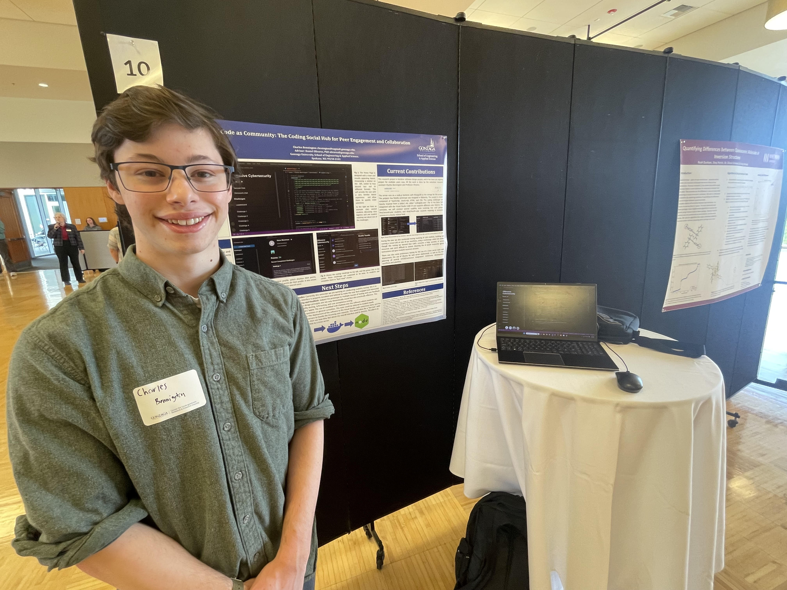

Research Assistant
Gonzaga University, Daniel Olivares January 2024 - August 2024I work one on one with the professor during the school year, we primarily work on research focusing on human learning and teaching.
We are working to build tools that will foster growth and collaboration between computer science students.
This year I attended and presented at SIRC 2025(Spokane Inter-college Research Conference). The experience was a ton of fun, and I really enjoyed myself. Presenting gave me some insights into my own research, as well was walking about and reading other students papers.
The poster I presented is available online to view -> Link